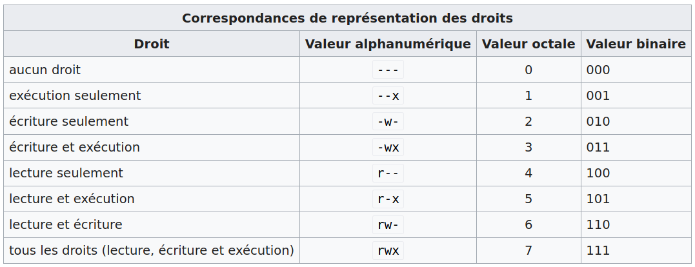

Programme Officiel
| Contenus | Capacités attendues | Commentaires |
|---|---|---|
| Systèmes d’exploitation | Identifier les fonctions d’un système d’exploitation. Utiliser les commandes de base en ligne de commande. Gérer les droits et permissions d’accès aux fichiers. |
Les différences entre systèmes d’exploitation libres et propriétaires sont évoquées. Les élèves utilisent un système d’exploitation libre. Il ne s’agit pas d’une étude théorique des systèmes d’exploitation. |
Nous avons vu qu’un ordinateur a été conçu pour pouvoir lui faire exécuter des algorithmes sous forme de programmes.
Le système d’exploitation est un programme tout à fait singulier, il est chargé en mémoire vive dès le démarrage de l’ordinateur et y reste jusqu’à son extinction. Il a la charge de coordonner l’ensemble des tâches qui sont exécutées par l’ordinateur. Il est situé entre le matériel et les applications.
Les deux familles de systèmes d’exploitation les plus populaires sont Unix (dont macOS, GNU/Linux, iOS et Android) et Windows.
- Windows est principalement utilisé sur les PC de bureau, c’est un système d’exploitation propriétaire tout comme MacOS.
- Linux au contraire est un système d’exploitation libre, il est principalement utilisé dans les serveurs, téléphones portables avec Android ou les supercalculateurs. Son code source est accessible publiquement en ligne.
Voici une courte vidéo de l’institut Mines-Télécom présentant l’histoire des systèmes d’exploitation.
Vidéo servie sans cookie via Project Segfault
Responsabilités du système d’exploitation
Le système d’exploitation a les responsabilités suivantes:
- Gérer le lancement des diverses applications et donner l’illusion que l’ordinateur est multitâche grâce à l’utilisation de processus;
- identifier les utilisateurs;
- gérer l’organisation du disque dur et de ses fichiers;
- contrôler l’accès aux données du disque dur et ressources de l’ordinateur.
Émulation d’un système Linux grâce à JSlinux
Comme nous avons au lycée un système d’exploitation Windows et que le programme officiel demande de travailler sous Linux, nous allons faire le TP de ce chapitre directement dans le navigateur grâce à l’émulateur de système mis au point par Fabrice Bellard accessible à l’adresse :
https://bellard.org/jslinux/vm.html?url=alpine-x86.cfg&mem=192
Une fois le terminal lancé:
- Lui demander qui êtes-vous avec la commande:
whoami - Ajouter un mot de passe à l’utilisateur
root(administrateur du système):passwd root. - Ajouter un nouvel utilisateur:
adduser ada, et lui donner un mot de passe de votre choix. - Sur votre ordinateur, télécharger ce fichier zip: https://framagit.org/lyceum/flask-csv/-/archive/master/flask-csv-master.zip puis l’importer grâce à l’icône
Upload Files. - Dans l’émulateur Jslinux, déplacer l’archive dans le répertoire
/home/ada - dézipper grâce à la commande:
unzip flask-csv-master.zip -d /home/ada - Changer d’utilisateur:
su ada. - Se déplacer dans son dossier utilisateur:
cd /home/ada
Quelques commandes de base
Où suis-je? pwd
pwd renvoie le dossier courant.
Par défaut quand on ouvre un terminal on se trouve dans son dossier $HOME:
/home/usernamepour l’utilisateurusername/root/si vous êtesroot, l’utilisateur administrateur du système.
Naviguer dans le système de fichiers ls et cd
lsliste les fichiers et répertoires du dossier courant.ls chemin/vers/dossier: liste les fichiers et répertoires du dossier donné en argument.
On peut également se déplacer dans le système de fichiers avec cd pour change directory.
cd root
Chemins absolus et relatifs
Les chemins d’accès peuvent être spécifiées de deux façons:
- Chemin absolu: commence par un
/et précise le chemin complet à partir de la racine du système de fichier. Ex:cd /usr/share/applications - Chemin relatif: pas de slash au début(ou un point:
./) on part du répertoire courant:cd Musicoucd ./Musiccd ..pour remonter d’un dossiercd ../Documentspour remonter d’un dossier et aller dans le dossier Documents
- Représenter l’arbre des fichiers du dossier
flask-csv-master. - Pour chaque fichier indiquer sa taille.
Manipuler les répertoires et fichiers
mkdir rep: crée le répertoirerep(make directory).touch file: crée le fichierfile.cat fichier: affiche le contenu du fichierfile.
Connaître les droits sur les fichiers ls -l
L’option -l pour long précise dans sa sortie:
permission type utilisateur propriétaire groupe propriétaire taille date nom
localhost:~$ ls -l /home/ada/flask-csv-master
total 20
-rw-r--r-- 1 root root 1064 Mar 12 15:43 LICENSE
-rw-r--r-- 1 root root 1456 Mar 12 15:43 README.md
-rw-r--r-- 1 root root 89 Mar 12 15:43 data.csv
-rw-r--r-- 1 root root 2227 Mar 12 15:43 flask-csv.py
drwxrwxrwx 2 root root 183 Mar 12 15:43 pages
Les droits sont sous la forme d rwx rwx rwx.
dindique qu’il s’agit d’un dossierr: droit de lecturew: droit d’écriturex: droit d’exécution
Il y a trois groupes de droits dans l’ordre:
- utilisateur
- groupe
- autres
-rw-r--r--: fichier avec droit de lecture et d’écriture pour l’utilisateur propriétaire, mais uniquement des droits de lecture pour les membres du groupe propriétaire et les autres utilisateurs.drwxr-xr-x: dossier avec droit de lecture, écriture et exécution pour l’utilisateur propriétaire, mais uniquement des droits de lecture et d’exécution pour les membres du groupe propriétaire et les autres utilisateurs.
| Droits | Fichier | Dossier |
|---|---|---|
| Lecture (r) | Lire le contenu du fichier | Afficher le contenu du répertoire |
| Écriture (w) | Modifier le fichier | Créer, supprimer et changer de nom des fichiers qu’il contient |
| Exécution (x) | Exécuter le fichier si c’est un programme. | Traverser le répertoire |
Gérer les droits avec chmod
Un utilisateur a le droit de faire un chmod sur un fichier :
- s’il est
root; - ou s’il est le propriétaire du fichier en question.
Les options passées à la commande chmod sont indiquées comme ceci :
chmod options modes fichiers
Pour un fichier : chmod [u g o a] [+ - =] [r w x] nom_du_fichier
Pour le contenu d’un répertoire (de façon récursive) : chmod -R [u g o a] [+ - =] [r w x] nom_du_répertoire
Les lettres u g o a designe les types de propriétaires concernés:
- u propriétaire (user)
- g groupe (group)
- o les autres (others)
- a tous (all)
Les lettres + - = désignent les changements d’état: + et - pour ajouter ou retirer un type de droit aux droits courants, et l’opérateur = pour les écraser.
Les lettres r w x désignent les permissions: read, write, execute.
Dans le cas précédent si l’on souhaite que tous les utilisateurs du groupe docker puissent lire et écrire dans le fichier brouillon.ipynb, on lance la commande chmod g+w sur le fichier:
chmod g+w Documents/git/2heoinfo/flask-csv/brouillon.ipynb
On peut alors vérifier le changement de droits avec ls -l
ada@coolerarch:~$ ls -l Documents/git/2heoinfo/flask-csv/
total 28
-rw-rw-r-- 1 ada docker 2690 4 juil. 10:39 brouillon.ipynb
...
Écriture octale
Pour modifier toutes les permission d’une seule commande, on utilise la notation octale.  Les commandes sont alors condensées pour préciser tous les droits: - chmod 755 mon_dossier donne au propriétaire tous les droits, aux membres du groupe et aux autres les droits de lecture et d’accès. C’est un droit utilisé traditionnellement sur les répertoires. - chmod 644 mon_fichier donne au propriétaire les droits de modification et lecture, aux membres du groupe et aux autres uniquement les droits de lecture. C’est un droit utilisé traditionnellement sur les fichiers.
Gérer les propriétaires avec chown
L’utilisateur racine(root) peut changer le propriétaire d’un fichier ou d’un dossier(de l’anglais change owner)
La syntaxe générale de la commande est:
chown [-hHLPR] [utilisateur][:groupe] cible1 [cible2 ..]
- Rendre l’utilisateur
johnpropriétaire du fichiertoto.txt:chown john /home/jane/toto.txt - Pour modifier le propriétaire de tout le contenu d’un dossier :
chown -Rf utilisateur1 /home/dossier1 - Pour modifier l’utilisateur et le groupe:
chown ada:prof /home/jane/toto.txt
Rendre l’utilisateur ada propriétaire de tous les fichiers et dossiers de son répertoire HOME: /home/ada.
Vérifier le changement avec ls -l.
- Informatique pour tous en classes préparatoires aux grandes écoles de Benjamin Wack
- Articles Wikipédia sur les OS et les commandes UNIX chmod, chown.
- Cours sur pixees.fr
Crédit image Golftheman, CC BY-SA 3.0, Lien